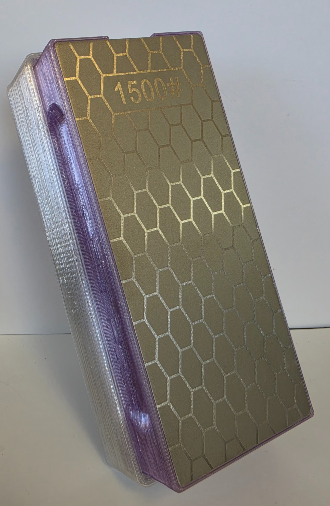
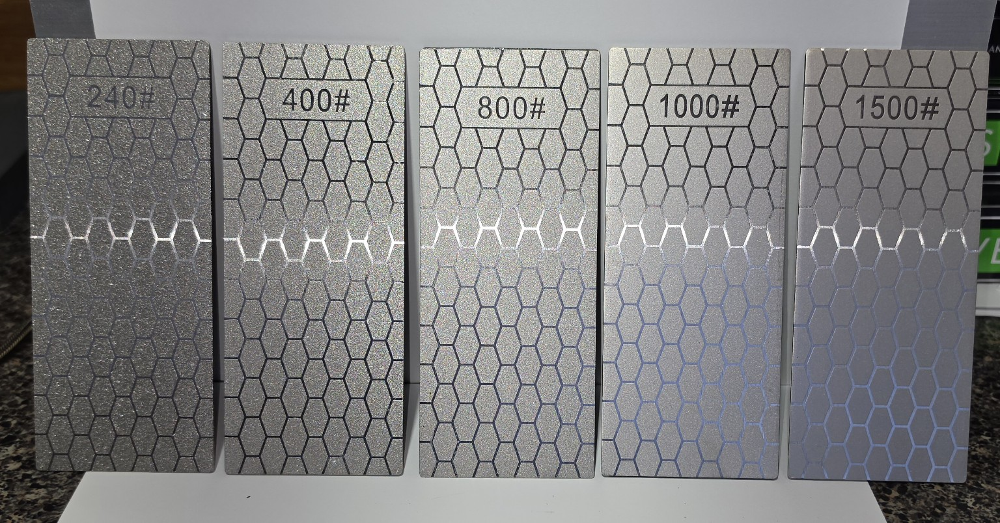
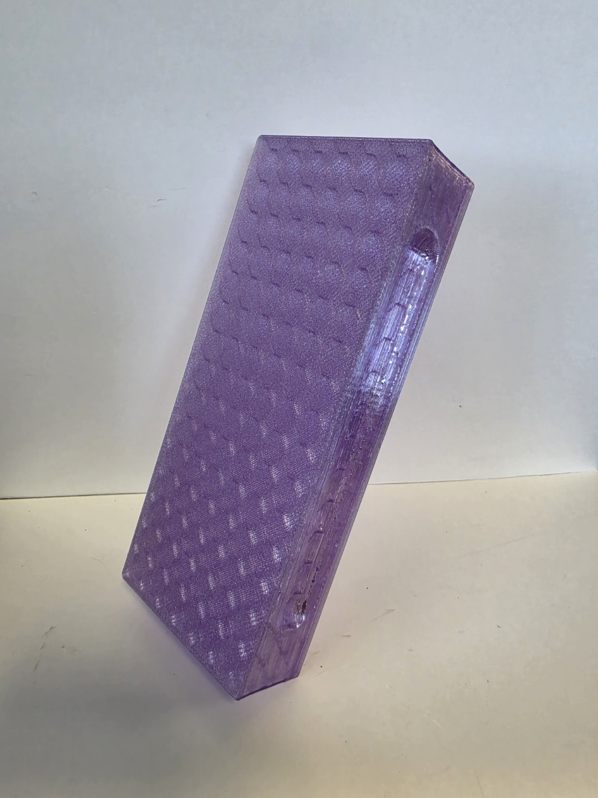
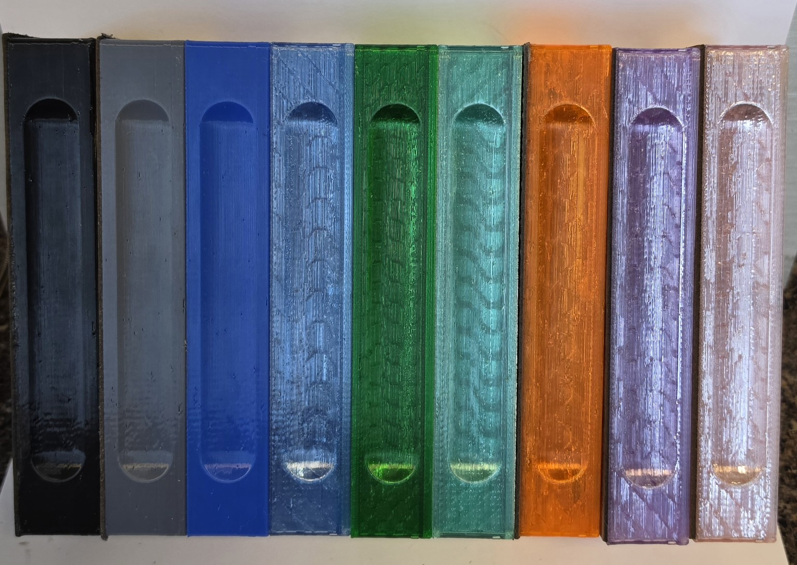
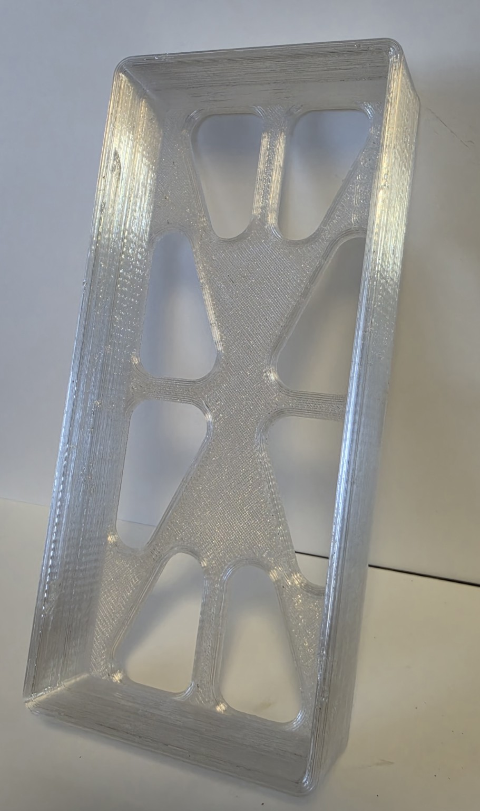

NEED A PART NOW
NEED A PART NOWALL-AROUND SHARPENING SYSTEM
Grandma Patsy
A five-plate system for all-around household and pocket-knife sharpening, starting at a coarser 240 grit and finishing at 1,500 grit.
$55.99 shipped
$45.99 local pickup

WHAT YOU GET
Simple, complete specifications
- Diamond plates240, 400, 800, 1,000 and 1,500 grit
- Diamond plate size2.5 inches wide × 6 inches long
- Holder size2.625 inches wide × 6.125 inches long × 1.000 inch tall
- HolderOne removable plate attaches to one side; the opposite side is left bare
- Storage baseStores the other four plates and elevates the sharpening surface
- Leather stropNot included
- Standard colorsTranslucent-purple holder and translucent-clear base
- Price$55.99 shipped or $45.99 local pickup


The base provides knuckle clearance above the table. Placing it on a damp paper towel helps resist sliding so the second hand is not needed to hold the system.
ORDER GRANDMA PATSY
$55.99 shipped or $45.99 local pickup
Choose shipped delivery or local pickup during PayPal checkout.
Buy Grandma Patsy with PayPalLocal pickup:
Need A Part Now
10670 FM 1484
Conroe, TX 77303
Monday–Friday, 7:00 AM–2:30 PM
COLOR OPTIONS
Choose the look


In-stock PETG colors
Choose the holder and base colors independently from stocked colors for +$10 total.
Non-stock colors
A custom PETG color is +$20 per printed component. A custom holder and custom base are +$40 total.
WHY THE NAME?
Grandma Patsy
Grandma Patsy represents the old-school rural grandmother who could butcher a chicken in the afternoon and serve it for supper that evening. This practical five-plate system is built for hardworking kitchen, farm and pocket knives.
HOW TO USE IT
Watch the Complete Sharpening Lesson
See how to hold the knife and sharpener, maintain a consistent angle, work through the diamond plates and finish the edge.
Watch the How to Use Video